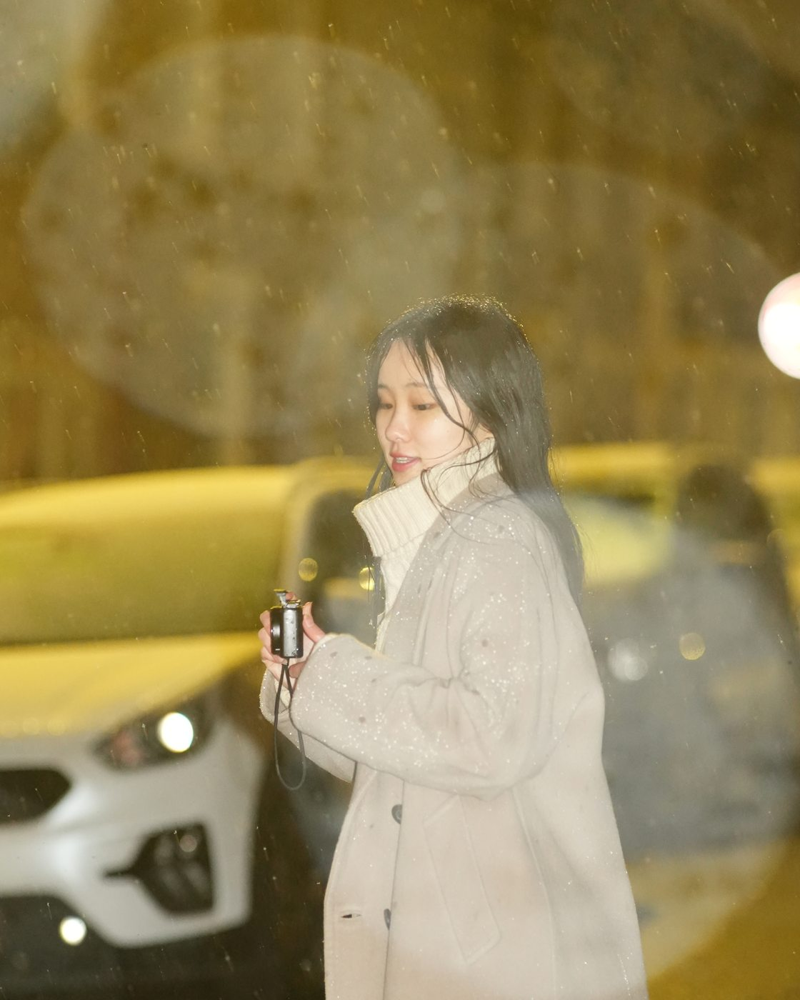

Photography & More Than Design
Observation as a design instrument.
A place for photography, sketches, material studies, field notes, personal experiments, and the visual references that keep the design work alive outside formal projects.

Behind the lens
I'm also a photographer. From 2016 to 2026, I have spent ten beautiful years capturing the world through a viewfinder. Photography is no longer just a hobby; it is woven into the very fabric of my life. From opening my first studio as an undergraduate, my lens has always been drawn to the stories told in human faces, the breathtaking stillness of deep space, and the sweeping majesty of nature. Along this journey, photography has also been my quiet archivist, beautifully freezing my design projects in time.
Photography Work